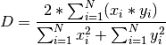
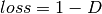

cnntools package¶
Top-level package including other sub-packages and modules which may not be fully related together.
Submodules¶
cnntools.binarymetrics module¶
Binary metrics for Keras.
This module contains some popular binary metrics. Most of the code is grabbed from [1] and [2]
References
| [1] | https://github.com/keras-team/keras/issues/5400 |
| [2] | (1, 2) https://gist.github.com/wassname/7793e2058c5c9dacb5212c0ac0b18a8a |
| [3] | https://arxiv.org/pdf/1606.04797v1.pdf |
-
cnntools.binarymetrics.dice_coef(y_true, y_pred)[source]¶ Dice coefficient [3], code taken from [2].
This implementation assumes that input and output are binary in range 0-1.
(1)¶
Parameters: - y_true (
numpy) – Ground truth values - y_pred (
numpy) – Predicted values
Returns: Dice coefficient according to (1). Returned is one single number.
Return type: tf.TensorExample
Use the following to evaluate returned tensor:
import numpy as np from keras import backend as K y1 = np.random.rand(2,4,4,1) y2 = np.random.rand(2,4,4,1) r = dice_coef(y1,y2) K.eval(r)
See also
- y_true (
-
cnntools.binarymetrics.dice_coef_loss(y_true, y_pred)[source]¶ Loss function based on
dice_coef().Defined as .
See also
cnntools.preparedataset module¶
Prepare training and testing data-pairs for use with CNN.
The purpose of PrepareDataSets is to randomly split specified dataset into two exclusive subsets containing
training pairs and testing pairs. The input and output image within each pair is defined by common core_name and
different suffix, e.g.:
- file_1.png - can be input image
- file_2.png - can be output image
- file_3.png - can be other input
In above example _1.png and _2.png stand for unique suffixes used for specifying input and output image in pair. This
module expects certain folder structure under root folder. The root has to be specified by user on creation of
PrepareDataSets object. Expected structure is as follows:
- root
- raw - contain all available training data, not necessarily training pairs. Crucial is uniform file naming.
- train - here randomly selected training pairs from raw wil be copied by
PrepareDataSets - test - here randomly selected testing pairs will be copied by
PrepareDataSets
At the end module produces .npz files in root folder with content of train and test folders (for sake of speed
up of loading). Input and output images are saved to separate files (in total 4 files are created, each two for train
and testing datasets). Additionally, these files contain filenames of images they were produced from in order they
appear in numpy arrays.
Warning
- train and test folders are deleted on each run of module.
- Images are saved as npz files without processing as [sample height width] arrays.
- Images are read in alphabetical order, note that if images names contain index at the end, it must have the same number of characters in each name to be sorted properly.
Example
The module can be called from :func:__main__ or from API. Calling from command line can look like follows:
python preparedataset.py 'in_suffix' 'target_suffix' percent_of_train rescale_factor
- Where:
- in_suffix - is suffix of images in raw folder used as inputs
- target_suffix - is suffix of images in raw folder used as outputs
- percent_of_train - percent of images in raw folder to be copied to train folder, remaining images will be copied to test folder
- rescale_factor - image rescale factor, 1.0 to not rescale.
Preparation of datasets, access from API:
from preparedataset import PrepareDataSets
data_path = 'training-data'
ob = PrepareDataSets(data_path)
ob.split_random('_1.png', '_2.png', 0.8)
ob.create_test_data('_2.png', '_1.png') # will save npz file
ob.create_train_data('_2.png', '_1.png') # will save npz file
Then saved npz files can be easelly loaded in other part of code:
from preparedataset import PrepareDataSets
data_path = 'training-data'
ob = PrepareDataSets(data_path)
train = ob.load_train_data()
test = ob.load_test_data()
# available fields
imgs_out_train._fields
# normalise, except _out, they are in range 0-1 and they are binary
imgs_out_train = train.output[..., np.newaxis].astype('float32') / 255
imgs_in_train = tools.normEach(train.input)[..., np.newaxis]
-
class
cnntools.preparedataset.PrepareDataSets(data_path, image_rows=256, image_cols=256, out_prefix='imgs')[source]¶ Bases:
objectMain class forming functionality of module
preparedataset.Read documentation of
preparedatasetfor details.Parameters: -
create_test_data(in_suffix, out_suffix, rescale_factor=None)[source]¶ Load testing images from test sub-folder into numpy array and save it under prefixed name.
Save prefix_test.npz and prefix_mask_test.npz files infolder specified in ::class::PrepareDataSets. File prefix_test.npz contains images with
in_suffixwhereas prefix_mask_test.npz those without_suffix. Both files contain two arrays, data and file names, both under keys data and names respectivelly.Parameters:
-
create_train_data(in_suffix, out_suffix, rescale_factor=None)[source]¶ Load training images from train sub-folder into
numpy.arrayarray and save it under prefixed name.Save prefix_train.npz and prefix_mask_train.npz files infolder specified in ::class::PrepareDataSets. File prefix_train.npz contains images with
in_suffixwhereas prefix_mask_train.npz those without_suffix. Both files contain two arrays, data and file names, both under keys data and names respectivelly.Parameters:
-
load_images_from_folder(suffix, from_folder, rescale_factor=None)[source]¶ Load images with specified suffix (can be only extension) from specified folder with optional scaling.
If suffix is list it is expected to be list of names of files to be loaded
from_folder.Parameters: Returns: tuple containing:
- images (
numpy.array): Array of [sample, height, width] with loaded images - names (str): List of names of loaded images in order they appear in returned
numpy
Return type: (tuple)
- images (
-
load_test_data()[source]¶ Load test data files saved by
create_test_data()function.Returns: tuple containing: - input (
numpy.array): Array of [num, x, y] with input images from test folder - input_names (
numpy.array): Names of the images that forminputarray in correct order - output (
numpy.array): Array of [num, x, y] with target images from test folder - output_names (
numpy.array): Names of the images that formoutputarray in correct order
Return type: ( namedtuple)Note
Note that returned
numpy.arrayarrays are in the same format as images saved on disk. Perhaps further scaling is necessary. Checkpreparedatasetdescription.- input (
-
load_train_data()[source]¶ Load training data files saved by
create_train_data()function.Returns: tuple containing: - input (
numpy.array): Array of [num, x, y] with input images from train folder - input_names (
numpy.array): Names of the images that forminputarray in correct order - output (
numpy.array): Array of [num, x, y] with target images from train folder - output_names (
numpy.array): Names of the images that formoutputarray in correct order
Return type: ( namedtuple)Note
Note that returned
numpy.arrayarrays are in the same format as images saved on disk. Perhaps further scaling is necessary. Checkpreparedatasetdescription.- input (
-
split_random(in_suffix, out_suffix, percent)[source]¶ Split training pairs from raw folder to two exclusive groups, and copy them to train and test folder.
Content of raw folder is not modified. This method finds common base in file names and copies all files with the same base. Therefore, file_1.png, file_2.png, file_3.png will be always copied together assuming that they relate to the same frame but differ in presentation (e.g. DIC, Mask, Fluorescent).
Parameters:
-
cnntools.tools module¶
Tools used by this project.
-
cnntools.tools.asRgbImage(red, blue=None, green=None)[source]¶ Convert planes RGB to image 8-bit.
Any input is rescaled to 8-bit 0-255 range.